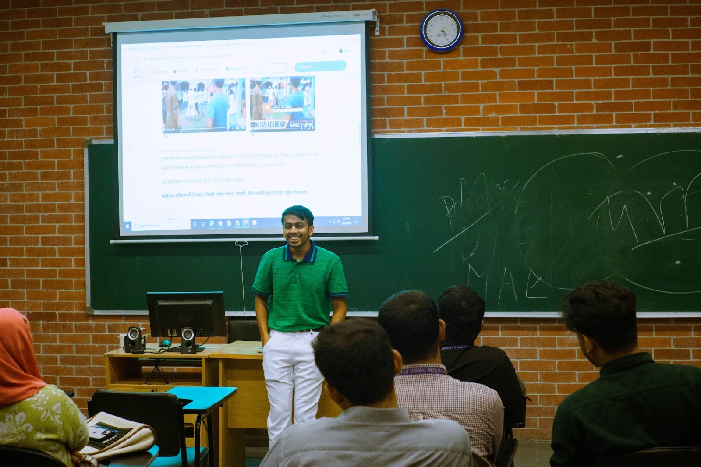

ForensIQ · digital investigations
Verification training, from evidence to method
As Head of Digital Investigations at ForensIQ, I train students and journalists in OSINT, source tracing, visual verification, and misinformation analysis — building habits of evidence in a newsroom culture that increasingly runs on speed.
